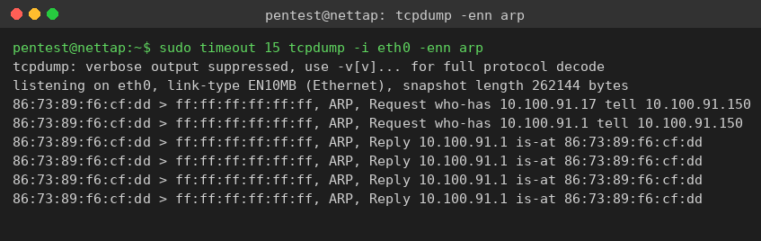
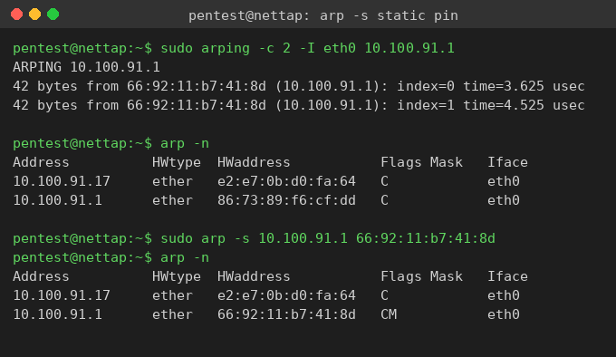
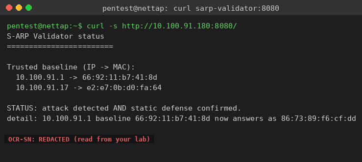

Exercise 9A: Securing the Wire
Before You Begin
You will defend the Bean & Byte Cafe network against a live ARP spoofing attack. A rogue device on the cafe LAN poisons the gateway binding so that other hosts send their traffic through the attacker. Your job is to learn the gateway's real MAC address, watch the poison hit the wire, pin a static ARP entry so the poison cannot rewrite your binding, and then read the defensive token off the S-ARP validator.
Make sure you have:
- VPN connected and verified
- The lab session started (network tap reachable at
10.100.<your_third_octet>.250) - Completed the ARP detection exercise (Phase 8) so the alert format is familiar
Engagement Status
Client: Bean & Byte Cafe Role: Security Auditor Phase: Reconnaissance Service Enumeration Exploitation Detection Defense
What you know so far:
- You mapped the cafe network (Phase 1), analyzed traffic (Phase 2), exploited services (Phases 3-4), and ran forensics (Phase 5)
- You performed ARP reconnaissance (Phase 6), executed ARP spoofing (Phase 7), and detected ARP spoofing (Phase 8)
- The cafe network has no Layer 2 defenses: any device can claim any MAC-to-IP binding
- A rogue device is about to poison the gateway binding via ARP spoofing
Your task: Implement and verify a static ARP defense that holds against a live attack, then study how S-ARP and Dynamic ARP Inspection would solve the same problem at scale.
Objective
Defend a critical IP-to-MAC binding against active ARP cache poisoning. You will baseline the legitimate gateway MAC, observe the rogue device's poison on the wire, pin a permanent (static) ARP entry that the poison cannot overwrite, and confirm the protected binding survived. Alongside the hands-on defense you will study two scaled approaches: the S-ARP cryptographic protocol and switch-level Dynamic ARP Inspection.
Difficulty: Advanced Estimated time: 75 minutes
Background: Why ARP Has No Security
ARP (Address Resolution Protocol) was designed in 1982 (RFC 826) for a small, trusted research network. The protocol designers assumed every device on the local network was trustworthy, so they built a protocol with zero authentication:
- Any device can claim any IP-to-MAC binding
- ARP replies are accepted without verifying who sent them
- Hosts update their ARP cache from unsolicited ARP replies (gratuitous ARPs)
- No mechanism verifies that an ARP reply is legitimate
The lack of authentication was a reasonable choice in 1982, but in 2026 it means any device on a shared Layer 2 network can redirect another device's traffic by sending forged ARP replies.
The Three Lines of Defense
Three major approaches address ARP's lack of authentication:
flowchart TD
A[ARP Spoofing Threat] --> B[Static ARP Entries]
A --> C[S-ARP Protocol]
A --> D[Dynamic ARP Inspection]
B --> E[Manual MAC pinning<br>Simple but doesn't scale]
C --> F[Cryptographic signatures<br>Elegant but never adopted]
D --> G[Switch-level enforcement<br>Enterprise standard today]- Static ARP entries pin MAC-to-IP bindings so they cannot be overwritten by spoofed replies. Simple and effective per binding, but it does not scale.
- S-ARP (Secure ARP) adds cryptographic signatures to ARP messages. Elegant in theory, but never widely adopted because of its infrastructure requirements.
- Dynamic ARP Inspection (DAI) validates ARP packets against a DHCP snooping table at the switch. The practical enterprise solution used today.
You will implement the first defense by hand and study the other two.
Tools You'll Need
| Tool | Purpose | Example |
|---|---|---|
arping |
Verify the live MAC behind an IP | arping -c 2 -I eth0 <ip> |
arp |
View and manage the ARP cache | arp -n, arp -s <ip> <mac> |
tcpdump |
Capture ARP frames on the wire | tcpdump -i eth0 -enn arp |
ip neigh |
Modern neighbor (ARP) cache control | ip neigh show, ip neigh replace |
curl |
Read the S-ARP validator status page | curl -s http://<validator_ip>:8080/ |
The network tap you SSH into carries all of these.
Network Topology
| Device | IP Offset | Hostname | Role |
|---|---|---|---|
| Cafe Gateway | .1 | cafe-gateway | Default route, NAT (PROTECT) |
| POS Terminal | .17 | cafe-pos | Payment processing (TARGET) |
| Barista Workstation | .23 | barista-pc | Staff workstation |
| Network Printer | .42 | cafe-printer | Print services |
| Smart Thermostat | .51 | cafe-thermostat | HVAC control |
| Rogue Device | .150 | rogue | Poisons the gateway binding after a short delay |
| S-ARP Validator | .180 | sarp-monitor | Active ARP monitor, serves the token on :8080 |
| Network Tap | .250 | nettap | Your SSH foothold on the cafe broadcast domain |
Your subnet
The cafe network uses 10.100.<third_octet>.0/24, where the third octet is unique to your lab session. The transcripts below were captured on 10.100.91.0/24. Substitute your own third octet wherever you see 91.
Time pressure
The rogue device begins poisoning the gateway binding shortly after the lab starts. Learn the real gateway MAC early, while the network is still clean, so you have a trusted value to pin.
Flag Progress
The flag has 2 parts, both revealed by the S-ARP validator once it has detected the live attack AND confirmed a static ARP entry is protecting the gateway binding. Collect both and combine them.
| Part | Source | Token | Found? |
|---|---|---|---|
| 1 | Validator detects the live spoof (signature mismatch) | ________ |
|
| 2 | Validator confirms the static ARP binding held | ________ |
Assembled flag format: OCR{________}
The validator publishes both tokens together on its status page, prefixed with OCR-SN:. Use only the value after the prefix when assembling the flag.
Walkthrough
Independent Mode
Want to try this on your own? You have the objective, the tools, and the topology above. Baseline the gateway MAC, watch the poison in tcpdump, pin it with arp -s, and read the token from the validator on port 8080. Come back to the walkthrough if you get stuck.
Step 0: SSH into the Network Tap
ARP operates at Layer 2, so you must be on the same broadcast domain as the cafe devices. Your Kali machine reaches the lab over a VPN (Layer 3), so ARP tools will not work from there. Blackridge Security has placed a network tap on the cafe switch. SSH into it for Layer 2 access.
SSH into the network tap
From your Kali terminal, open an SSH session to the tap. Authenticate with the password Security1#. Every command in this walkthrough runs from inside the tap, not from your Kali terminal.
Step 1: Baseline the Gateway's Real MAC
Before you can pin a binding you need the legitimate value. Ask the gateway directly with arping while the network is still clean. arping sends a raw ARP request and prints the MAC that answers.
Learn the real gateway MAC
Run this early, before the rogue starts. Record the MAC that replies: it is the value you will pin.
Real output
ARPING 10.100.91.1
42 bytes from 66:92:11:b7:41:8d (10.100.91.1): index=0 time=3.625 usec
42 bytes from 66:92:11:b7:41:8d (10.100.91.1): index=1 time=4.525 usec
--- 10.100.91.1 statistics ---
2 packets transmitted, 2 packets received, 0% unanswered (0 extra)
10.100.91.1 answers from MAC 66:92:11:b7:41:8d. Yours will differ: write down whatever value your gateway replies with.
Step 2: Observe the Poison on the Wire
Now watch the attack arrive. Capture ARP frames on the tap and look for replies that claim the gateway IP from a MAC that is not the one you just recorded.
Capture the ARP spoof
Run a short ARP capture. When the rogue starts, it broadcasts gratuitous replies claiming to be the gateway.

Real output
86:73:89:f6:cf:dd > ff:ff:ff:ff:ff:ff, ARP, Request who-has 10.100.91.17 tell 10.100.91.150
86:73:89:f6:cf:dd > ff:ff:ff:ff:ff:ff, ARP, Request who-has 10.100.91.1 tell 10.100.91.150
86:73:89:f6:cf:dd > ff:ff:ff:ff:ff:ff, ARP, Reply 10.100.91.1 is-at 86:73:89:f6:cf:dd
86:73:89:f6:cf:dd > ff:ff:ff:ff:ff:ff, ARP, Reply 10.100.91.1 is-at 86:73:89:f6:cf:dd
10.100.91.150 (MAC 86:73:89:f6:cf:dd) is broadcasting Reply 10.100.91.1 is-at 86:73:89:f6:cf:dd. It claims the gateway IP .1 but answers with its own MAC, not the real 66:92:11:b7:41:8d. Every host that believes this reply will route its gateway traffic through the attacker.
Step 3: Confirm Your Cache Was Poisoned
The gratuitous replies do not just sit on the wire: they rewrite the cache of any host that accepts them. Check your own binding for the gateway now.
Real output (poisoned)
Address HWtype HWaddress Flags Mask Iface
10.100.91.17 ether e2:e7:0b:d0:fa:64 C eth0
10.100.91.1 ether 86:73:89:f6:cf:dd C eth0
10.100.91.1 now maps to 86:73:89:f6:cf:dd, the rogue's MAC, not the 66:92:11:b7:41:8d you baselined in Step 1. The C flag means the entry is a normal, dynamic (complete) entry, which is exactly what makes it overwritable. Your traffic to the gateway is currently flowing through the attacker.
Step 4: Pin a Static ARP Entry
Stop the poison from owning your binding. A static entry tells the kernel that this IP always maps to this MAC and must never be changed by an incoming ARP reply. Pin the real gateway MAC you recorded in Step 1.
Pin the gateway binding as permanent
Then confirm the entry is now permanent.

Real output (defended)
Address HWtype HWaddress Flags Mask Iface
10.100.91.17 ether e2:e7:0b:d0:fa:64 C eth0
10.100.91.1 ether 66:92:11:b7:41:8d CM eth0
66:92:11:b7:41:8d, and the flags changed from C to CM. The added M flag marks the entry as manual (permanent): it will not be overwritten by any ARP reply, so the rogue's continued broadcasts cannot move it.
The ip command does the same thing
On hosts where arp is not installed, the modern equivalent is:
Step 5: Confirm the Binding Holds Under Attack
The rogue keeps broadcasting. Wait a few seconds and check the gateway entry again. A working static entry stays pinned to the real MAC no matter how many spoofed replies arrive.
Real output
Still66:92:11:b7:41:8d, still CM. The poison kept arriving on the wire (you can re-run the Step 2 capture to prove it), but it could not touch the pinned binding. The defense held.
Step 6: Read the Token from the S-ARP Validator
The cafe runs an S-ARP validator at offset .180. It learns a trusted baseline of IP-to-MAC bindings at startup, then actively probes the protected hosts and compares the replying MAC to the baseline. When it sees the gateway answer with a new MAC it flags a spoof, and once it confirms a static ARP entry is holding the binding it publishes both tokens on its status page.
Poll the validator status page
Read the validator's status page over HTTP. If it still reports monitoring..., wait and poll again: it needs to see the live attack and confirm the static defense first.

Real output
Both flag parts
The validator prints the assembled token OCR-SN:<TOKEN>. The first part (s4rp_st4t1c) is the cryptographic detection of the live spoof; the second part (d41) confirms the static ARP binding held. Drop the OCR-SN: prefix and wrap the value as the flag.
Step 7: Assemble and Submit the Flag
Combine the token value with the flag wrapper:
Submit this as your flag in the platform.
Part 2: S-ARP (Secure ARP) Protocol
The validator you just queried is a teaching model of S-ARP. The full protocol was a serious 2003 proposal worth understanding.
The History of S-ARP
In 2003, Danilo Bruschi, Alberto Ornaghi, and Emanuele Rosti of the University of Milan published "S-ARP: a Secure Address Resolution Protocol" at the 19th Annual Computer Security Applications Conference (ACSAC). Their insight was that the core problem with ARP is the absence of any way to verify who sent a reply, and their fix was to add a cryptographic signature to every ARP message.
How S-ARP Works
S-ARP adds a Public Key Infrastructure (PKI) layer to ARP:
sequenceDiagram
participant AKD as Authoritative Key<br>Distributor (AKD)
participant H1 as Host A
participant H2 as Host B
Note over AKD: Maintains registry of<br>IP to Public Key bindings
H1->>AKD: Register: IP=10.0.0.1, PubKey=K_A
AKD->>AKD: Store binding, sign certificate
H2->>H1: ARP Request: Who has 10.0.0.1?
H1->>H2: ARP Reply: 10.0.0.1 is-at AA:BB:CC:DD:EE:FF<br>+ Signature(IP|MAC, PrivKey_A)
H2->>AKD: Verify: Get public key for 10.0.0.1
AKD->>H2: PubKey_A (certified)
H2->>H2: Verify signature using PubKey_A
Note over H2: Signature valid -> update cache<br>Signature invalid -> REJECT replyKey components:
- Authoritative Key Distributor (AKD): a trusted server holding a registry of IP-to-public-key bindings. Every host registers its public key with the AKD when it joins.
- Signed ARP replies: each reply carries a digital signature over the IP-MAC binding, computed with the sender's private key.
- Signature verification: a receiver fetches the sender's public key from the AKD and verifies the signature before updating its cache.
- Spoof detection: an attacker forging a reply cannot produce a valid signature for the victim's IP, so the forged reply is rejected.
The lab validator stands in for this with an HMAC over each IP|MAC binding instead of a public-key signature. Because the validator runs on a Docker bridge, it cannot passively sniff the rogue's unicast poisoning, so it uses active arping probes: it learns the trusted MAC at startup, then re-probes and treats any changed MAC as a spoof. That active design is why the token appears once the attack is live and the static binding is confirmed, not before.
Why S-ARP Was Never Widely Adopted
| Barrier | Details |
|---|---|
| PKI infrastructure | Every network needs a Certificate Authority and AKD server. Most organizations in 2003 had no PKI at all. |
| No OS support | No major operating system ever implemented S-ARP natively. It needs kernel-level changes to the ARP stack. |
| Performance overhead | Public-key operations on every ARP exchange add latency, which mattered in 2003. |
| Bootstrap problem | A new device needs ARP for initial connectivity, but ARP now requires S-ARP validation. |
| Hardware compatibility | Switches and routers would need firmware updates to pass extended packets. |
| Competing solutions | Enterprise switches already had DAI and port security, which solved the problem without protocol changes. |
The lesson: a technically superior solution that requires the whole ecosystem to change at once loses to a good-enough solution that works with existing infrastructure.
Part 3: Dynamic ARP Inspection (DAI)
Static ARP and S-ARP are host-level defenses. Dynamic ARP Inspection (DAI) operates at the switch, which makes it the most practical enterprise solution.
How DAI Works
DAI is a feature on managed switches (Cisco, Juniper, Aruba). It intercepts ARP packets on untrusted ports and validates them before forwarding.
flowchart TD
A[ARP Packet Arrives<br>on Untrusted Port] --> B{Check DHCP<br>Snooping Table}
B -->|IP-MAC matches| C[Forward ARP Packet]
B -->|IP-MAC mismatch| D[Drop ARP Packet<br>Log Violation]
B -->|IP not in table| E{Check ARP ACL<br>static override?}
E -->|ACL match| C
E -->|No ACL match| D
F[ARP Packet Arrives<br>on Trusted Port] --> C
style D fill:#ff4444,color:#fff
style C fill:#44aa44,color:#fffKey components:
- DHCP snooping table: the switch watches DHCP transactions and builds a binding table of IP-to-MAC-to-port mappings, which becomes the source of truth.
- Trusted vs untrusted ports: uplinks are trusted and pass ARP without inspection; access ports are untrusted and have their ARP validated.
- ARP validation: an ARP packet on an untrusted port is dropped if its IP-MAC binding does not match the snooping table.
- Rate limiting: DAI also rate-limits ARP per port (typically 15-20 per second) to blunt ARP flooding.
DAI Configuration Example (Cisco IOS)
You cannot configure DAI in this lab (it needs a managed switch), but the configuration is worth knowing:
! Enable DHCP snooping globally
ip dhcp snooping
ip dhcp snooping vlan 10,20,30
! Mark uplink as trusted (DHCP server is behind this port)
interface GigabitEthernet0/1
ip dhcp snooping trust
! Enable DAI on the VLANs
ip arp inspection vlan 10,20,30
! Mark uplink as DAI trusted
interface GigabitEthernet0/1
ip arp inspection trust
! Rate limit ARP on access ports
interface range GigabitEthernet0/2-48
ip arp inspection limit rate 15
! Optional: validate additional ARP fields
ip arp inspection validate src-mac dst-mac ip
Comparing the Three Defenses
| Feature | Static ARP | S-ARP | DAI |
|---|---|---|---|
| Where it runs | Every host | Every host + AKD server | Network switch |
| Configuration | Per-host, manual | PKI infrastructure | Per-switch/VLAN |
| Scales to | 10-20 devices | Theoretically unlimited | Enterprise (thousands) |
| Survives DHCP changes | No | Yes | Yes |
| Hardware required | None | None (but needs OS support) | Managed switch |
| Attack detection | No | Yes | Yes |
| Rate limiting | No | No | Yes |
| Cost | Free | Free (but unusable) | Managed switches |
The practical answer
For the Bean & Byte Cafe, the real recommendation is:
- Immediate: set static ARP entries on the POS terminal and gateway to protect payment traffic now (you just did this for the gateway).
- Short-term: install a managed switch with DAI enabled to protect the entire network.
- S-ARP: an instructive concept, but not a practical deployment option.
Analysis Questions
After the hands-on defense, work through these. Discuss with your team or write your answers in your lab notebook.
Question 1: One-Directional Defense
You pinned the gateway binding on the tap. Has that fully protected traffic between the tap and the gateway, or is there still an exposure? Explain.
Discussion points
A static entry on your host protects YOUR cache, so your frames go to the real gateway. But the gateway still holds a dynamic entry for you, so the rogue can still poison the gateway's view of your MAC and intercept the return path. Full bidirectional protection needs static entries on both ends.
Question 2: Static ARP Failure Scenarios
List three scenarios where static ARP entries would break normal network operations.
Think about
- DHCP renewal assigns a new IP to a device.
- A device's NIC is replaced, changing its MAC.
- A device moves to a different port under port security.
- A VM migrates between hypervisors and its MAC changes.
Question 3: Why Active Detection
The validator probes hosts with arping instead of passively sniffing. Why is passive sniffing unreliable for catching the poison on a switched segment?
Think about
A switch forwards unicast frames only to the destination port, so a monitor that is not the victim never sees the rogue's unicast poisoning replies. Actively re-asking "who has this IP" and comparing the answer to the baseline catches the change regardless of who the unicast was aimed at.
Question 4: DAI Evasion
If an attacker held a legitimate DHCP lease, could they still perform ARP spoofing on a DAI-protected network?
Think about
The attacker's own IP-MAC binding would be in the snooping table, but spoofing a DIFFERENT binding for MITM would not match the table, so DAI drops it. The remaining risk is trusted/trunk ports, where ARP is not inspected.
Question 5: Defense in Depth
Design a complete Layer 2 strategy for the cafe combining multiple mechanisms. What would you deploy and in what order?
Consider
- VLAN segmentation (separate POS, IoT, staff, guest).
- Managed switch with DAI + DHCP snooping.
- Port security (limit MACs per port).
- 802.1X port-based access control.
- Static ARP on critical devices as belt-and-suspenders.
- Monitoring (arpwatch or S-ARP-style validation) for detection.
Defensive Recommendations for the Cafe Owner
| Priority | Action | Cost | Effort | Impact |
|---|---|---|---|---|
| 1 - Immediate | Static ARP on POS terminal and gateway | Free | 10 min | Protects payment traffic now |
| 2 - This phase | Install a managed switch with DAI | ~$300 | 2-4 hours | Prevents ARP spoofing network-wide |
| 3 - This phase | Enable DHCP snooping on the switch | Free | 30 min | Builds the trust anchor for DAI |
| 4 - This month | Implement VLANs (POS, IoT, Staff, Guest) | Free | 4-8 hours | Limits ARP attack scope per VLAN |
| 5 - This month | Deploy port security (1 MAC per port) | Free | 1-2 hours | Blocks rogue device connections |
| 6 - Ongoing | Run arpwatch monitoring | Free | 30 min | Alerts on any ARP change |
Critical finding
The cafe's flat network means any single compromised device can intercept payment card data from the POS terminal via ARP spoofing. Static ARP is a temporary fix; a managed switch with DAI is the minimum acceptable long-term control for any business handling payment data.
Common Mistakes
Pinning the wrong MAC
Pinning an incorrect gateway MAC drops your connectivity. Always verify with arping before arp -s. To recover: sudo arp -d 10.100.91.1 removes the bad entry.
Pinning the poisoned value
If you wait until after the poison lands and then read the MAC from your cache, you may pin the attacker's MAC. Baseline early (Step 1) and pin the value you captured while the network was clean.
Forgetting static ARP is one-directional
A static entry on your host protects your traffic, but the other end still has a dynamic entry for you. Both ends need static entries for full protection.
Confusing S-ARP with DAI
S-ARP is a host protocol adding signatures to ARP packets and was never deployed. DAI is a switch feature validating ARP against DHCP snooping and runs in production today.
Key Takeaways
What this teaches
- ARP has no authentication by design. Every ARP defense is a workaround for a 1982 trust assumption.
- Static ARP is the simplest defense. Pinning a binding with
arp -sproduces a permanent (M) entry that spoofed replies cannot overwrite, which you proved against a live attack. - Baseline before you defend. You can only pin a trusted MAC if you captured it before the poison arrived.
- S-ARP was an elegant idea that failed. Cryptographic ARP would have fixed the problem, but the PKI and OS requirements were too high a barrier.
- DAI is the practical answer. Switch-level validation against DHCP snooping scales to enterprise networks and is the industry standard.
- Defense in depth matters. DAI, static ARP, monitoring, and VLAN segmentation together beat any single control.
What's Next
You have completed the ARP security series (Phases 6-9): reconnaissance, spoofing, detection, and defense. The next exercise, Lock Down Layer 2, hands you a different segment and a different target with no walkthrough, so you can prove the defense on your own.